Лабораторные работы выполняются на реальном оборудовании, установленном в лаборатории с удаленным доступом СибГУТИ. Это оборудование может быть доступно Вам по сети Internet. С помощью программы, установленной на Вашем компьютере, Вы сможете регулировать реальные источники сигналов органами управления и получать результаты измерения реальных полупроводниковых приборов в виде графиков. Эти работы позволят Вам более глубоко понять физические процессы, протекающие в приборах. Графики характеристик исследуемых приборов не нужно строить по точкам, их можно копировать с экрана компьютера непосредственно в отчет. Для выполнения работ в лаборатории с удаленным доступом необходимо на Вашем компьютере установить свободно распространяемую программу LabView Run-Time и запустить клиентскую программу El_clienr.exe, которые можно скачать с сайта лаборатории, расположенного по адресу : http://www.labfor.ru/
Если в течете 1-2 дней вопрос не решен с доступом к лабораторной установке, то, возможно, Ваше письмо не дошло до преподавателя. В этом случае свяжитесь со своим администратором и опишите возникшую проблему, указав название дисциплины.
Все лабораторные работы выполняются с помощью лаборатории с удаленным доступом. Используется реальное оборудование, установленное в лаборатории электронных средств обучения СибГУТИ. Это оборудование (регулируемые источники напряжения, измерители тока и напряжения, осциллографы и графопостроители) доступны студентам по сети Internet. Для выполнения лабораторных работ необходимо на Вашем компьютере установить свободно распространяемую программу LabView Run-Time и запустить клиентскую программу El_client.exe, которые можно скачать с сайта лаборатории, расположенного по адресу: http://www.labfor.ru/.
1. Подготовка к работе.
Подготовка к выполнению лабораторной работы включает:
а) ознакомление с описанием работы;
б) изучение вопросов курса, указанных в описании, по одному из рекомендованных литературных источников и по конспекту лекций;
в) подготовку бланка отчета.
Выполнив указанные пункты, студент должен знать схемы исследования, предполагаемый вид графиков, которые предстоит снять экспериментально, и уметь ответить на контрольные вопросы.
Предварительная подготовка бланка отчета позволяет в процессе выполнения работы записывать показания приборов непосредственно в таблицы отчета и строить по ним графики.
Бланк отчета начинается с титульного листа, который должен быть написан по следующей форме:
Далее необходимо указать цель работы, изобразить схему исследования и заготовить таблицы для записи результатов измерений. Примеры выполнения таблиц даны в каждой лабораторной работе.
Перед заполнением таблицы не следует полностью переписывать соответствующий пункт задания. Достаточно указать номер выполняемого пункта (по описанию работы), написать название выполняемого пункта и записать функциональную зависимость (если она имеется в задании).
2. Отчет по работе
Так как заполнение таблиц бланка отчета производится в процессе выполнения работы, то оформление отчета включает в себя: построение графиков, расчет необходимых величин и выводы по работе. Оформление отчета производится в соответствии с разделом “Указания к составлению отчета”, имеющимся в описании каждой лабораторной работы.
При записи электрических величин (в таблицах, на осях координат и др.) кроме их обозначений необходимо написать единицы измерения, например: UKЭ, В; IK, мА; R1, Ом.
Исследование статических характеристик полупроводниковых диодов
1 . Цель работы
Изучить устройство полупроводникового диода, физические процессы, происходящие в нем, характеристики, параметры, а также типы и применение полупроводниковых диодов.
2. Подготовка к работе
2.1 Изучить следующие вопросы курса:
2.1.1 Электрические свойства полупроводников. Собственные и примесные полупроводники.
2.1.2 Электронно-дырочный переход, его характеристики и параметры. Прямое и обратное включение p-n перехода.
2.1.3 Вольтамперные характеристики и параметры полупроводниковых диодов, выполненных из различных материалов.
2.1.4 Влияние температуры на характеристики и параметры диодов.
2.1.5 Типы полупроводниковых диодов, особенности их устройства, работы и характеристики. Применение.
2.2 Ответить на следующие контрольные вопросы:
2.2.1 Что такое собственная и примесная проводимость полупроводника?
2.2.2 Объяснить образование электронно-дырочного перехода.
2.2.3 Что такое контактная разность потенциалов? Как она образуется?
2.2.4 Чем определяется толщина p-n перехода?
2.2.5 Нарисовать потенциальные диаграммы p-n перехода при отсутствии внешнего напряжения, и при включении его в прямом и обратном направлениях?
2.2.6 Рассказать о прохождении токов через p-n переход: при отсутствии внешнего напряжения, при прямом включении и при обратном включении.
2.2.7 Сравнить теоретическую и реальную вольтамперную характеристики p-n перехода, указать участки, которые соответствуют состоянию электрического и теплового пробоя.
2.2.8 Сравнить вольтамперные характеристики p-n переходов, изготовленных из G e, Si.
2.2.9 Что такое барьерная и диффузионная емкости p-n перехода? Дать определение.
2.2.10 Нарисовать и объяснить вольтамперные характеристики p-n перехода для различных значений температуры.
Литература
1. Игнатов А.Н., Калинин С.В., Савиных В.Л. Основы электроники, - СибГУТИ, Новосибирск, 2005, стр. 119-121.
2. Электронные, квантовые приборы и микроэлектроника. /Под редакцией Федорова Н.Д. -М: Радио и связь, 1998. Стр. 11-66.
3. Электронные приборы. /Под редакцией Шишкина Г.Г. -М.: Энергоатомиздат, 1989. Стр. 12-43, 54-88, 97-129.
4. Батушев В.А. Электронные приборы. -М.: Высшая школа, 1980. Стр. 29-85.
5. Савиных В.Л. Физические основы электроники. – Сиб ГУТИ, Новосибирск, 2002. Электронная версия.
6. Справочники по полупроводниковым диодам.
3 . Схемы исследования
На рисунке 1.1 приведена схема для снятия вольтамперных характеристик диодов в прямом направлении.
При измерении обратного тока (рисунок 1.2) изменяется полярность подводимого напряжения.
Для исследования характеристики стабилитрона используется схема, приведенная на рисунке 1.3.
На рисунке 1.4 приведена схема для исследования однополупериодного выпрямителя. Используется германиевый диод.
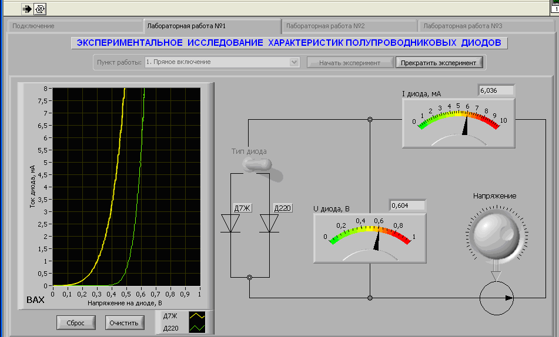
Рисунок 1.1
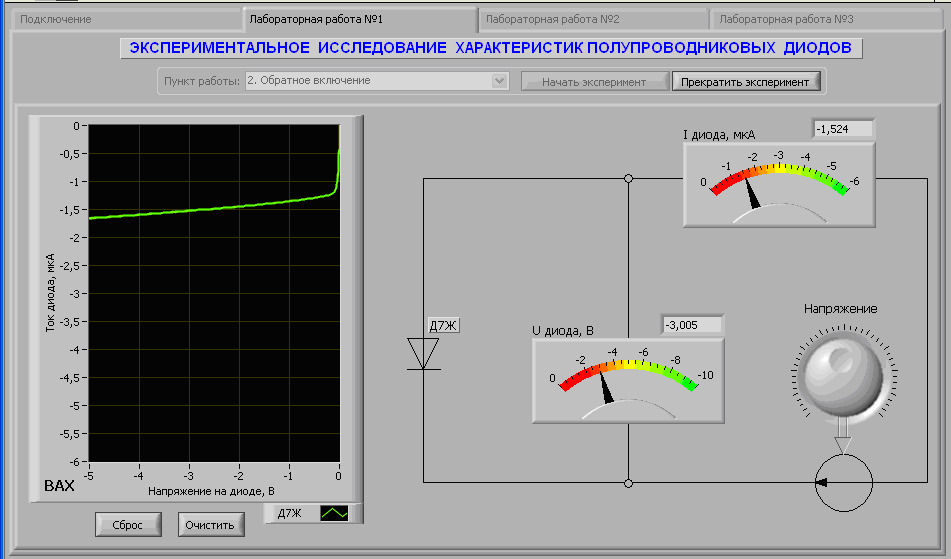
Рисунок 1.2
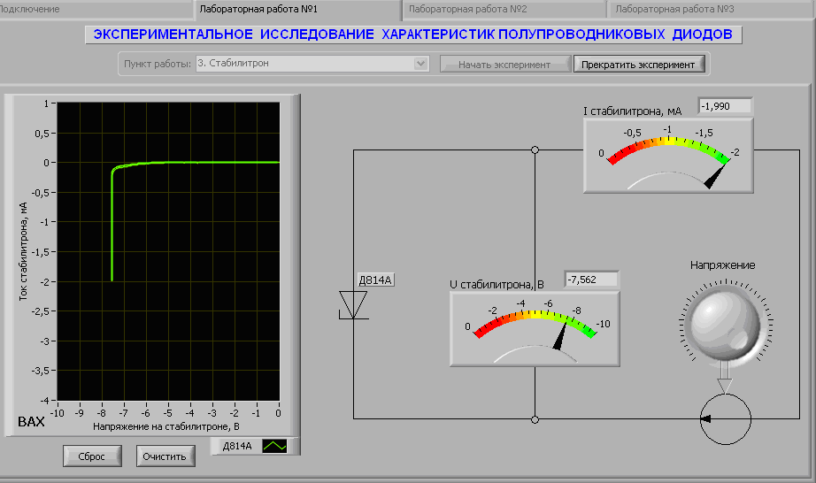
Рисунок 1.3
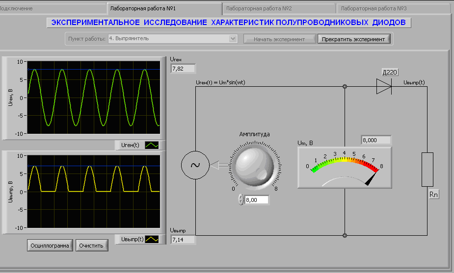
Рисунок 1.4
4. Порядок проведения лабораторной работы
4.1 Для снятия вольтамперных характеристик диодов при прямом включении вывести на экран дисплея схему (рисунок 1.1). Для этого выбрать “Лабораторная работа №1”. Затем “Прямое включение” и “Начать эксперимент”.
4.2 Последовательно снять вольтамперные характеристики германиевого и кремниевого диодов IПР=f(UПР) Для этого подвести курсор к тумблеру с обозначением диода и выбрать один из диодов, например, Д7Ж.
4.3 Подвести курсор на ручку “Напряжение” и вращая ручку по часовой стрелке снять ВАХ. Характеристика вырисовывается на экране осциллографа.
Заполнить таблицу 1.1а.
Примечание. При быстром изменении напряжения на диоде характеристика может получиться не монотонной. Для повторного исследования осуществить очистку экрана осциллографа и произвести повторное исследование.
Таблица 1.1а - Диод D7Ж
|
UПР, В |
|||||||||
|
IПР, мА |
0 |
1 |
2 |
3 |
4 |
5 |
6 |
7 |
8 |
4.4 Провести исследование второго диода. Переключить тумблер на другой тип диода. Осуществить сброс приборов в нулевое положение и снять ВАХ. Заполнить таблицу 1.1б.
Таблица 1.1б - Диод D220
|
UПР, В |
|||||||||
|
IПР, мА |
0 |
1 |
2 |
3 |
4 |
5 |
6 |
7 |
8 |
Прекратить эксперимент.
4.5 Определить, какой из диодов выполнен из германия, какой из кремния.
4.6 Исследовать вольтамперную характеристику диода при обратном включении (рисунок 1.2.).
Таблица 1.2а - Диод D7Ж
|
UОБР, В |
0 |
-1 |
-2 |
-3 |
-4 |
-5 |
|
IОБР, мкА |
4.7 Провести исследование стабилитрона Д814А.
Таблица 1.2в- Стабилитрон Д 814А.
|
UСТ, В |
|||||||||
|
IСТ, мА |
4.8 Исследовать однополупериодный выпрямитель (рисунок 1.4).
Зарисовать осциллограммы напряжения генератора на входе и напряжения на нагрузке при двух различных значениях переменного напряжения 2 и 8 вольт.
5 Указания к составлению отчета
5.1 Привести схемы исследования полупроводниковых диодов.
5.2 Привести таблицы с результатами измерений.
5.3 Привести вольтамперные характеристики (график 1) германиевого и кремниевого диодов для прямого включения.
5.4 По характеристикам определить сопротивления постоянному току и дифференциальные сопротивления при прямом токе 4 мА для каждого из диодов. Результаты занести в таблицу 1.4.
5.5 На графике №2 привести вольтамперную характеристику диода Д7Ж при обратном включении. По графику определить сопротивления постоянному току и дифференциальные сопротивления диода при напряжении 3 В.
5.6 На графике №3 привести ВАХ стабилитрона IСТ=f(UСТ).
5.7 Привести осциллограммы, полученные при исследовании выпрямителя (сигнал на входе и на выходе). Осциллограммы располагать одна под другой без сдвига по времени.
5.8 Сделать выводы по проделанной работе.
Таблица 1.4
|
Диод |
RПР= |
RПР ДИФ |
RОБР= |
RОБР ДИФ |
|
Д7А |
||||
|
Д220 |
- |
- |
Исследование статических характеристик биполярного транзистора
1. Цель работы
Ознакомиться с устройством и принципом действия биполярного транзистора (БТ). Изучить его вольтамперные характеристики в схемах включения с общей базой (ОБ) и общим эмиттером (ОЭ).
2. Подготовка к работе
2.1 Изучить следующие вопросы курса:
2.1.1 Устройство БТ, схемы включения (ОБ, ОЭ и ОК), режимы работы ( с точки зрения состояния переходов).
2.1.2 Потенциальные диаграммы для различных структур БТ в активном режиме работы.
2.1.3 Принцип действия БТ и основные физические процессы в нем.
2.1.4 Статический коэффициент передачи тока и уравнения коллекторного тока для всех схем включения.
2.1.5 Статические характеристики транзистора в схемах включения ОБ и ОЭ.
2.1.6 Предельные параметры режима работы БТ. Рабочая область характеристик.
2.1.7 Влияние температуры на работу БТ, его характеристики в схеме ОБ и ОЭ и предельные параметры.
2.1.8 Дифференциальные параметры БТ.
2.1.9 Усилитель на БТ.
2.2 Ответить на следующие контрольные вопросы:
2.2.1 Устройство плоскостного транзистора.
2.2.2 Принцип действия биполярного бездрейфого транзистора.
2.2.3 Нарисовать схемы включения транзистора с ОБ, ОЭ и ОК для структур p-n-p и n-p-n.
2.2.4 Начертить потенциальные диаграммы p-n-p и n-p-n транзисторов в различных режимах их работы.
2.2.5 Из каких компонент состоят токи через эмиттерный и коллекторный переходы транзистора?
2.2.6 Из каких компонент состоит ток базы?
2.2.7 Дать определение коэффициентов инжекции и переноса.
2.2.8 Как влияет на работу транзистора неуправляемый ток коллекторного перехода? Какие причины его возникновения?
2.2.9 Написать уравнения коллекторного тока для схем ОБ и ОЭ.
2.2.10 Нарисовать и объяснить входные и выходные характеристики транзистора для схем ОБ и ОЭ.
2.2.11 Показать на входных и выходных характеристиках области, соответствующие режимам: активному, отсечки и насыщения.
2.2.12 Какие факторы ограничивают рабочую область выходных характеристик транзистора?
2.2.13 Объяснить влияние температуры на статические характеристики БТ в схемах включения с ОБ и ОЭ.
2.2.14 Как зависят значения предельных параметров БТ от температуры?
2.2.15 Объяснить построение рабочей области выходных характеристик транзистора.
2.2.16 Объяснить влияние температуры на рабочую область БТ .
2.2.17 Привести систему Н-параметров транзистора, указать назначение каждого параметра и показать их определение по характеристикам.
2.2.18 Объяснить принцип работы БТ в усилительном режиме.
2.2.19 Назвать основные типы биполярных транзисторов (с точки зрения мощностей и частот).
Литература
1. Игнатов А.Н., Калинин С.В., Савиных В.Л. Основы электроники, - СибГУТИ, Новосибирск, 2005, стр. 119-121.
2. Электронные, квантовые приборы и микроэлектроника. Под редакцией Федорова Н.Д -М: Радио и связь, 1998. Стр. 70-81, 86-92.
3. Электронные приборы. Под редакцией Шишкина Г.Г. -М.: Энергоатомиздат, 1989. Стр.140-170 (выборочно).
4. Батушев В.А. Электронные приборы. -М.: Высшая школа, 1980. Стр.93-121 (выборочно).
5. Конспект лекций.
3. Схемы исследования
Принципиальная схема для транзистора структуры n-p-n для исследования входных и выходных характеристик с ОБ приведена на рисунке 2.1.
Принципиальная схема для транзистора структуры n-p-n при исследовании с ОЭ приведены на рисунке 2.2.
Схема исследования усилителя на БТ приведена на рисунке 2.3
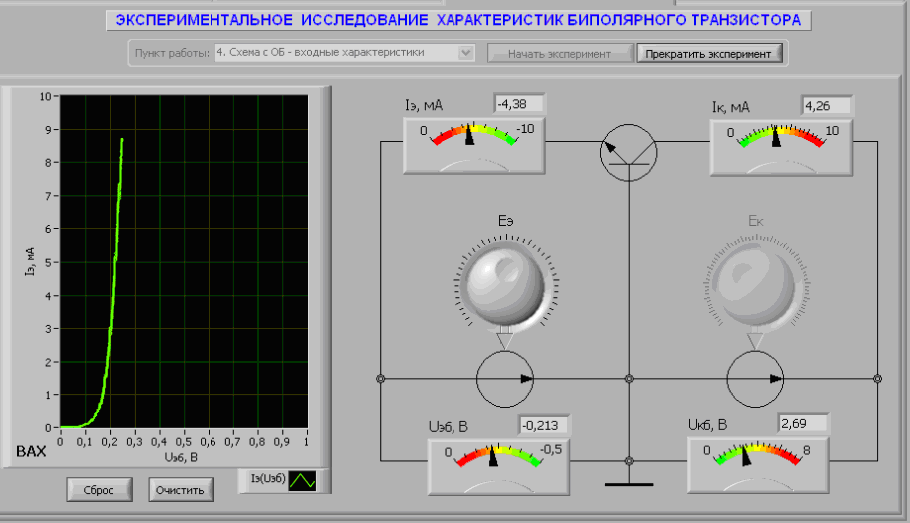
Рисунок 2.1
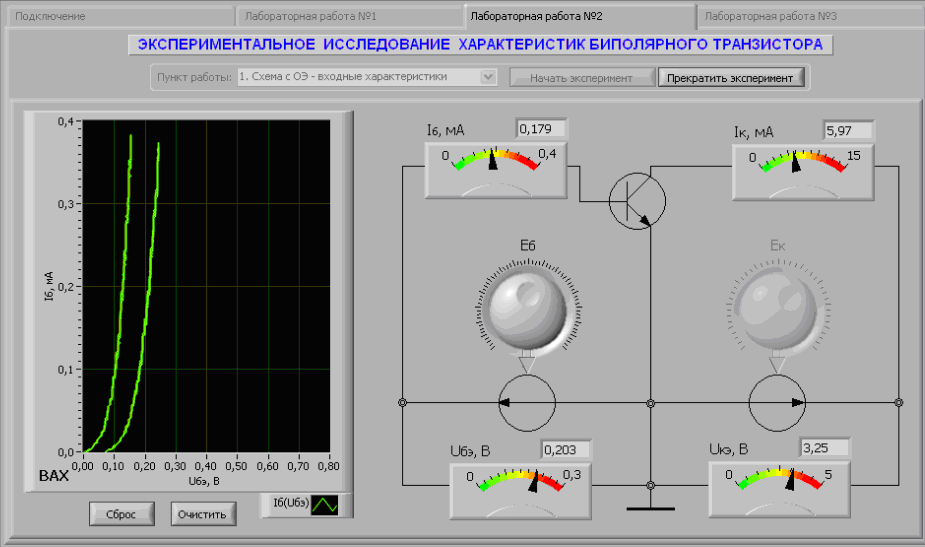
Рисунок 2.2
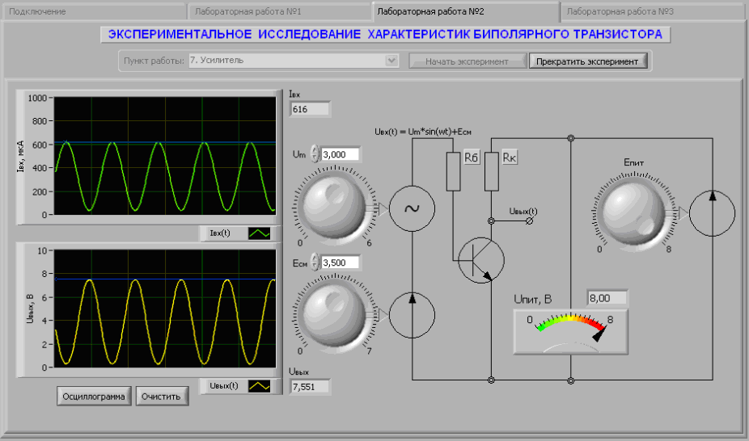
Рисунок 2.3
4. Порядок проведения экспериментов
4.1 Исследовать БТ для схемы с ОБ. Для этого выбрать “Лабораторная работа №2”. Затем “Схема с ОБ - входные характеристики” и “Начать эксперимент”. Снять две входные характеристики транзистора IЭ= f(UЭБ) при UКБ=0 и UКБ=8 В. Для того, чтобы получить две характеристики на одном экране нужно после окончания измерения первой характеристики нажать кнопку сброс, выставить новое значение напряжения UКБ и снять вторую характеристику. Результаты измерений занести в таблицу 2.1. Пример заполнения таблицы для транзистора типа МП37 А приведен ниже.
Таблица 2.1 - Транзистор МП37А.
|
UКБ, В |
IЭ, мА |
0,1 |
1 |
2 |
4 |
6 |
10 |
|
0 |
UЭБ, В |
||||||
|
8 |
UЭБ, В |
4.2. Снять три выходные характеристики транзистора IК=f(UКБ). Первую для IЭ=0, вторую для IЭ=2 мА и третью для IЭ=5 мА. Результаты измерений занести в таблицу 2.2. Пример таблицы для того же транзистора дан ниже.
Таблица 2.2 - Транзистор МП37А.
|
IЭ, мА |
UКБ, В |
0 |
0,5 |
1 |
2 |
5 |
8 |
|
0 |
IКБ0, мкА |
||||||
|
2 |
IК, |
||||||
|
5 |
мА |
4.3 Снять две входные характеристики IБ=f(UБЭ): одну при UКЭ=0, вторую при UКЭ=8 В. Результаты измерений занести в таблицу 2.3. Пример таблицы дан ниже.
Таблица 2.3 - Транзистор МП37А.
|
UКЭ, В |
UБЭ, В |
|||||||
|
0 |
IБ, мкА |
|||||||
|
8 |
IБ, мкА |
4.4 Снять семейство из 6 выходных характеристик IК=f(UКЭ) при токах базы, указанных в таблице 2.4, включая IБ=0. Особое внимание обратить на участок характеристик в режиме насыщения, т.е. UКЭ=0 - 1 В, а так же не превосходить мощность рассеивания на коллекторе (UКЭ∙IК=РК<РК max=150 мВт). Результаты измерений заносятся в таблицу 2.4. Пример таблицы приведен ниже.
Таблица 2.4 - Транзистор МП37А.
|
IБ,мкА |
UКЭ,В |
0,1 |
0,2 |
0,5 |
1 |
2 |
5 |
|
0 |
IКЭ0,мкА |
||||||
|
50 |
|||||||
|
100 |
IК, мА |
||||||
|
150 |
|||||||
|
200 |
|||||||
|
250 |
4.5. Исследовать работу усилителя. В исходном состоянии схемы транзистор работает в активном режиме (на выходе отсутствуют нелинейные искажения сигнала). Получить осциллограммы сигналов на входе и выходе усилителя для трех случаев: а) рабочая точка находится посредине рабочего участка; б) рабочая точка находится вблизи режима отсечки; в) рабочая точка находится вблизи режима насыщения. Режим работы транзистора определяется уровнем напряжения источника смещения Есм.
5. Содержание отчета
5.1 Тип исследуемого транзистора .
5.2 Схемы исследования.
5.3 Таблицы результатов измерений
5.4 Графики входных и выходных характеристик для схем с ОБ и с ОЭ, построенных по результатам измерений. При построении семейства характеристик (несколько характеристик на одних осях) подписать каждую из характеристик. Например, при построении выходных характеристик в схеме с ОЭ около каждой характеристики необходимо указать чему равен ток базы. Примеры графиков даны ниже.
5.5 Осциллограммы входного и выходного сигналов транзисторного усилителя для трех случаев (режим отсечки, режим насыщения, активный режим).
5.6 Сделать выводы по работе.
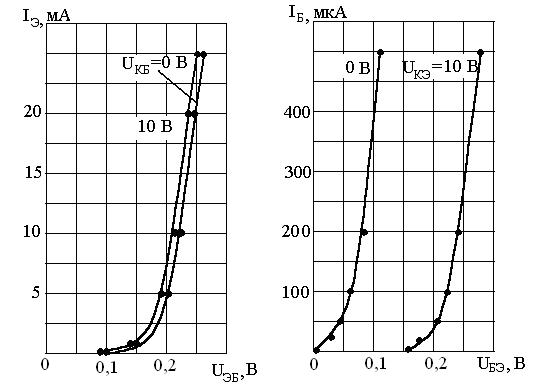
а) б)
Рисунок 2.6- Входные характеристики БТ для схем включения: а) с общей базой и б) с общим эмиттером.
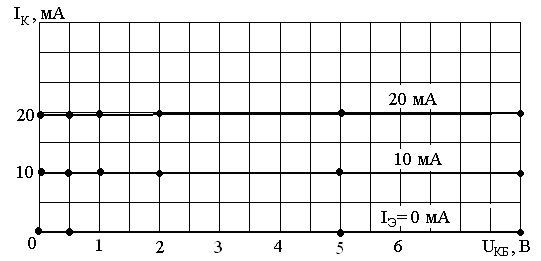
Рисунок 2.7- Выходные характеристики БТ для схемы включения с общей базой.
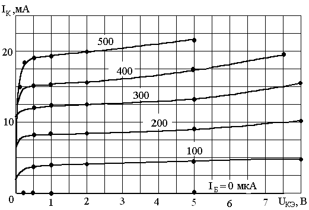
Рисунок 2.8- Выходные характеристики БТ для схемы включения с общим эмиттером.
Исследование статических характеристик и параметров полевых транзисторов
1. Цель работы
Изучить принцип действия, характеристики и параметры полевых транзисторов (ПТ).
2 . Подготовка к работе
2.1. Изучить следующие вопросы курса:
2.1.1. Устройство, назначение, принцип действия ПТ различных структур.
2.1.2. Схемы включения ПТ.
2.1.3. Статические характеристики.
2.1.4. Дифференциальные параметры ПТ и их определение по характеристикам.
2.2. Ответить на следующие контрольные вопросы:
2.2.1. Объяснить устройство полевых транзисторов с p-n переходом и изолированным затвором (МДП структура).
2.2.2. Нарисовать обозначение полевых транзисторов разных типов и структур.
2.2.3. Объяснить принцип действия полевых транзисторов с p-n переходом и с изолированным затвором.
2.2.4. Изобразить и объяснить вид передаточных и выходных характеристик ПТ различных типов с каналом “p” и “n”.
2.2.5. Объяснить определение дифференциальных параметров по статическим характеристикам ПТ.
2.2.6. Нарисовать схемы для исследования статических характеристик полевых транзисторов различных типов с каналом типа “p” и “n”.
2.2.7. Дать определение предельным эксплуатационным параметрам ПТ.
2.2.8. Пояснить влияние температуры на работу ПТ, его статические характеристики и параметры.
Литература
1. Игнатов А.Н., Калинин С.В., Савиных В.Л. Основы электроники, - СибГУТИ, Новосибирск, 2005, стр. 119-121.
2. Электронные, квантовые приборы и микроэлектроника. Под редакцией Федорова Н.Д. -М: Радио и связь, 1998. Стр.146-156, 166-176, 184-185.
3. Электронные приборы. Под редакцией Шишкина Г.Г. -М.: Энергоатомиздат, 1989. Стр. 205-224, 235-245 (выборочно).
4. Батушев В. А. Электронные приборы. -М.: Высшая школа, 1980. Стр. 183-211 (выборочно).
5. Дулин В. Н. Электронные приборы. -М.: Энергия, 1977. Стр. 342-357 (выборочно).
6. Савиных В.Л. Физические основы электроники. – Сиб ГУТИ, Новосибирск, 2002. Электронная версия.
3. Схемы исследования
На рисунке 3.1 приведена схема для снятия статических передаточных характеристик полевого транзистора. На рисунке 3.2 приведена схема для снятия статических выходных характеристик полевого транзистора. На рисунке 3.3 приведена схема усилителя. Полярность источников питания и приборов соответствует типовому включению ПТ с p-n переходом и каналом р-типа.
К входу ПТ (затвор-исток) прикладывается управляющее напряжение UЗИ. К выходу ПТ (сток-исток) прикладывается напряжение UCИ. Ток стока измеряется миллиамперметром.
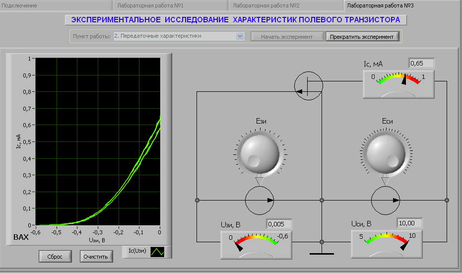
Рисунок 3.1. Схема для снятия передаточных характеристик.
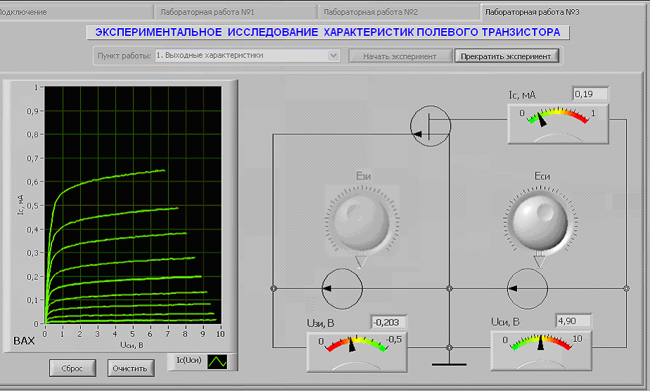
Рисунок 3.2. Схема для снятия выходных характеристик.
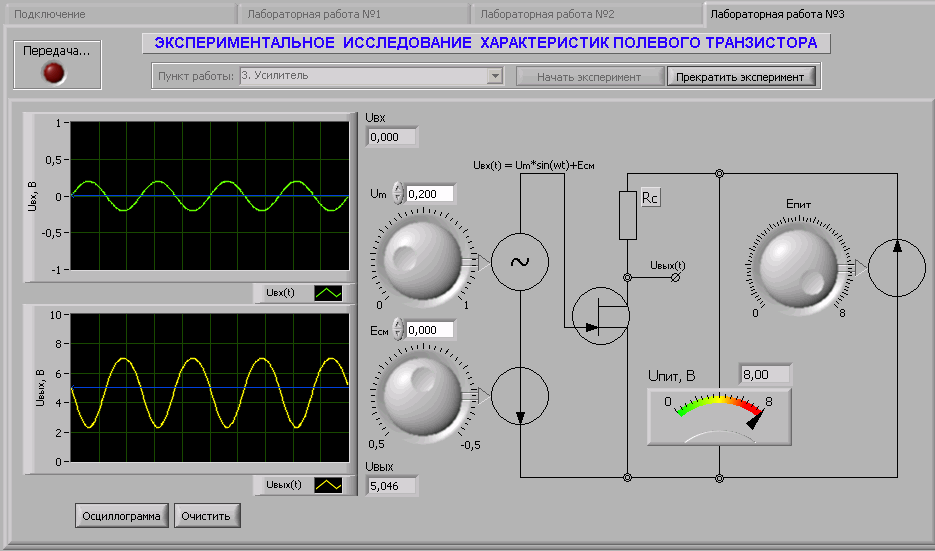
Рисунок 3.3. Схема усилителя.
4. Порядок проведения исследований
4.1. Снять передаточную характеристику IC=F(U3И). Для этого выбрать “Передаточные характеристики” (рисунок 3.1), установить UCИ=10В и изменять напряжение U3И до тех пор, пока IC не станет равным нулю. Результаты измерений занести в таблицу 3.1. Определить напряжение отсечки U3ИО (определить напряжение U3И, при котором ток стока снизится примерно до 10 мкА)
Таблица 3.1
|
UЗИ, В |
|||||||||
|
IС , мА |
4.2 Снять выходные характеристики транзистора при четырех значениях напряжения на затворе UЗИ, в том числе при UЗИ 1= 0, UЗИ 2 » 0,2 × UЗИО и UЗИ3» 0,4 × UЗИО и UЗИ 4= 0,6 UЗИО. Результаты измерений внести в таблицу 3.2.
Таблица 3.2
|
UЗИ,В |
UСИ,В |
0 |
0,5 |
1 |
2 |
4 |
6 |
10 |
|
0 |
IС, мА |
0 |
||||||
|
0,2 × UЗИО |
0 |
|||||||
|
0,4 × UЗИО |
0 |
|||||||
|
0,6 × UЗИО |
0 |
4.3. Исследовать схему усилителя при различных напряжениях Есм (получить неискаженный и искаженный сигнал на выходе).
5. Указания к составлению отчета
Отчет должен содержать:
5.1 Схемы исследований транзистора.
5.2 Таблицы с результатами исследований.
5.3 График характеристики прямой передачи
5.4 Семейство выходных характеристик
5.5 Определить крутизну в двух точках характеристики прямой передачи: при напряжении UЗИ= 0 В и UЗИ= 0,5∙UЗИ0
5.6 Привести осциллограммы работы усилителя.
Варианты заданий для нечетной предпоследней цифры пароля.
Таблица П.1.
|
№ вар |
Диоды |
Биполярный транзистор |
Полевой транзистор |
|
|
1 |
D11 |
D219A |
KT315B |
KP302B |
|
2 |
D12 |
D220 |
KT315D |
KP302G |
|
3 |
D12A |
D220A |
KT315E |
KP302V |
|
4 |
D13 |
D220B |
KT315G |
KP303A |
|
5 |
D14 |
D226B |
KT315I |
KP303B |
|
6 |
D14A |
D226D |
KT315V |
KP303D |
|
7 |
D18 |
D226E |
KT315Z |
KP303E |
|
8 |
D20 |
D226G |
KT316A |
KP303G |
|
9 |
D310 |
D226V |
KT316B |
KP303I |
|
0 |
D311 |
D237A |
KT316D |
KP303V |
Варианты заданий для четной предпоследней цифры пароля.
Таблица П.2.
|
№ вар |
Диоды |
Биполярный транзистор |
Полевой транзистор |
|
|
1 |
D311A |
D237B |
KT368A |
KP307A |
|
2 |
D311B |
D237E |
KT368B |
KP307B |
|
3 |
D312 |
D237G |
KT371A |
KP307E |
|
4 |
D312A |
D237V |
KT371B |
KP307G |
|
5 |
D312B |
KD102A |
KT373A |
KP307V |
|
6 |
D7B |
KD102B |
KT373B |
KP307Z |
|
7 |
D7D |
KD103A |
KT373G |
KP308A |
|
8 |
D7E |
KD103B |
KT373V |
KP308B |
|
9 |
D7G |
KD104A |
KT375A |
KP308D |
|
0 |
D7V |
KD105B |
KT375B |
KP308G |